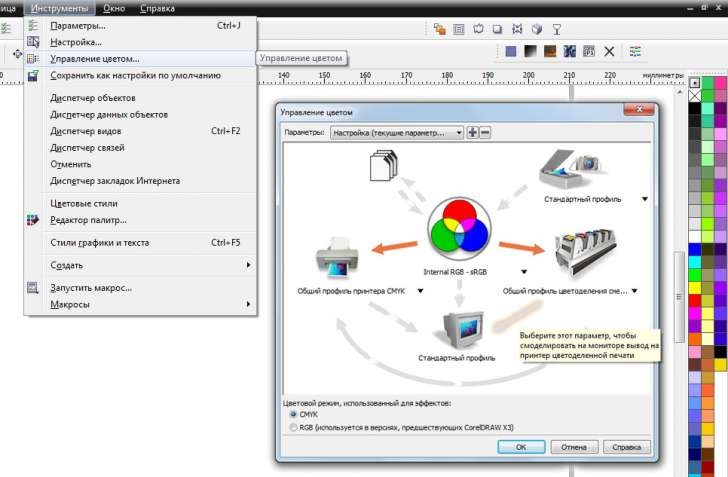

Пропала Стандартная палитра CMYK
djus / 19.06.2013, 11:52
Форум:
Версия программы:
12.0.0.458
Доброго дня. На днях дочка рисовала в Кореле и каким то непонятным образом пропала палитра CMYK.
Осталась RGB и другие. При переустановке программы палитра так и не появилась (пробывал 3 раза).
В меню "ОКНО" / "цветовые палитры" есть пункт "Стандартная CMYK палитра, но при выборе по правому краю вообще пропадают все палитры.
Кто знает как востановить её? Очень неудобно работать без неё
Попробуйте стартануть CorelDRAW с зажатой клавишей F8 - это должно привести к сбросу рабочего пространства на дефолтное
спасибо за совет, но не помогло((((
Ищи палитру в меню Windows > Color Palettes (не помню, есть такое вообще в 12)
к сожалению нет там палитры
Неужели никто не знает как настроить палитру CMYK? Есть тут профи?
так ответы ваши ставят в тупик :) всё должно уже было появиться - это во-первых
а во-вторых, с 12 версией большие проблемы - мало у кого осталась ...
на примере Х6 - пара скриншотов - суть должна быть та же
в 12 она скорее всего имеет другое расширение файла - но по названию можно соориентироваться ...
если и это не поможет - то придется перед переустановкой помимо простого удаления ещё и чистить комп от всех следов КорелДро - реестр, папки и пр. - и только потом устанавливать
Просто я за 15 лет работы привык именно к 12 версии...Остальные всегда чем то не устраивали...скорее всего придется переустанавливать винду
Не, тут все переустанавливают винду когда у них палитра СМИК пропадает.
Короче патратил пару часов...востановил палитру в ручную добавляю цвета (образцы брал с 13 версии)...Хоть так то)))
djus, может палитра не пропала, а поменялась на непривычные цвета?
Такое бывает при импорте растровых картинок со своими цветовыми профилями.
Надо пощёлкать стрелочки
